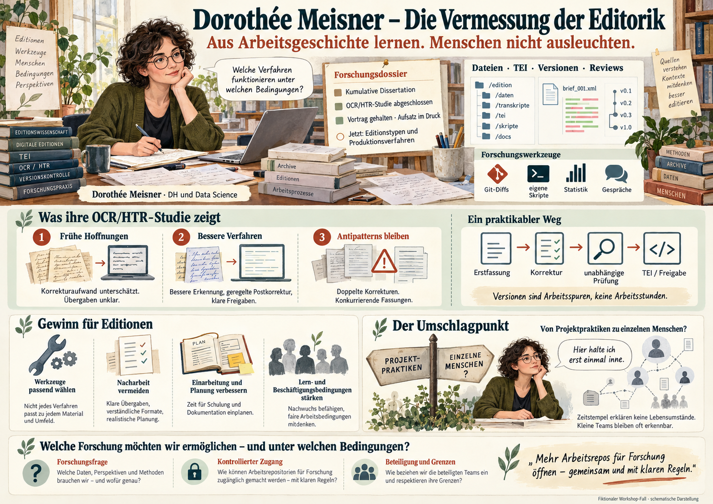

R1 / Publikationsrepository
Das Ergebnis
Freigegebene Zustände. Dazwischen kann viel Arbeit unsichtbar bleiben.
01 Dorothée Meisner · Forscherin editorischer Arbeitspraktiken
Dorothée Meisner kennt das Gefühl: Neue Kolleginnen arbeiten sich mühsam ein. Dateien gelten als fertig – und müssen später noch einmal angefasst werden. Nach Projektende weiß kaum jemand, wie es dazu kam.
„Welche Verfahren funktionieren unter welchen Bedingungen – und warum?“
Heute untersucht sie genau das. Für ihre kumulative Dissertation verbindet die Promovierende historische und soziologische Digital Humanities mit Data Science. Eigene Erfahrung in Edition und Projektkoordination prägt ihre Fragen.
Eine fiktionale Fallgeschichte. Personen, Projekte und Beispieldaten sind für diesen Fall gestaltet. Die dargestellten Befunde gelten innerhalb der Erzählung. Diese Offline-Einheit greift auf keine Repositorien zu.
Wenn wiederkehrende Reibungen verständlich werden, lassen sich Einarbeitung, Werkzeugwahl und Übergaben besser gestalten. Dorothée möchte gemeinsam mit der Editionsgemeinschaft aus Erfahrungen lernen, die sonst in einzelnen Projekten bleiben.
Dorothée arbeitet mit Git, TEI und eigenen Skripten
Dorothée lädt Repositorien, liest Editionsrichtlinien und ordnet die Arbeitspakete. Für manche Arbeitsdaten vereinbart sie einen geschützten Forschungszugang. Ihre Python-Skripte lesen frühere TEI-Zustände; sie prüft Änderungen anschließend selbst an Textbeispielen und Projektunterlagen.
Eine Gruppierung mit Clustering liefert ihr erste Kandidaten für ähnliche Abläufe. Ob diese fachlich zusammengehören, entscheidet sie durch Vergleiche und Gespräche – nicht durch das Etikett des Verfahrens.
R1 / Publikationsrepository
Freigegebene Zustände. Dazwischen kann viel Arbeit unsichtbar bleiben.
R2 / Hybrid-Git
Publikation und Bearbeitung im selben Bestand. Ihre Funktionen müssen auseinandergehalten werden.
R3 / Arbeitsrepository
Bearbeitung, Prüfungen und interne Notizen. Zugang kann öffentlich oder eigens geschützt sein.
Ein Arbeitspaket / schematische Daten
Gezählt werden Dokumente eines festen Pakets von 40 Texten: transkribiert, annotiert, nach Review freigegeben. Die Kategorien überlappen; sie werden nicht addiert. Eine Freigabe kann wieder geöffnet werden.
| Stand | Transkribiert | Annotiert | Freigegeben |
|---|---|---|---|
| Januar | 12 | 0 | 0 |
| April | 30 | 10 | 4 |
| Juli | 40 | 29 | 18 |
| Oktober | 40 | 40 | 36 |
| Dezember | 40 | 40 | 40 |
Versionsgeschichte dokumentiert Zustandsänderungen, keine vollständige Arbeitsgeschichte. Git-Stände sind Spuren zuvor erledigter Arbeit. Zeitstempel sind keine Arbeitszeiterfassung. Ein Publikationsimport kann ältere Herstellung abbilden. Erklärungen benötigen Vergleichsdesigns, Datierung und gegebenenfalls Interviews und Unterlagen.
Eine abgeschlossene Teilstudie / Aufsatz im Druck
Nach ihrem Vortrag legt Dorothée eine Abbildung aus der Druckfahne ihres Aufsatzes auf den Tisch. Ihre abgeschlossene OCR/HTR-Studie zeigt: Bessere Texterkennung verändert nicht nur die erste Fassung. Sie verschiebt Korrektur, Zuständigkeiten und editorische Freigabe.
1 / Frühe Einführung
Erwartete Zeitgewinne blieben in mehreren untersuchten Projekten aus. Postkorrektur war unterschätzt. Unklar blieb, wer Fehler prüft und welche Fassung in TEI übernommen wird. Doppelte Korrekturen und erneute Exporte erzeugten Nacharbeit.
2 / Eingespielte Verfahren
In späteren Verläufen ihrer Stichprobe misst Dorothée bessere Erkennung und stabilere Abläufe. Geregelte Postkorrektur, unabhängige Kontrolle und verlässliche TEI-Integration machen den technischen Gewinn nutzbar.
3 / Bis heute
Zwei konkurrierende Korrekturstände, unklare Abnahmen oder Rückexporte, die Korrekturen überschreiben: Solche Antipatterns findet sie auch in jüngeren Projekten.
Schematische Bearbeitungskette
Schematische Bearbeitungskette
In einem Projekt wechseln Erstbearbeitung und gegenseitige Prüfung partnerschaftlich. In einem anderen bleibt die Letztentscheidung bei einer festen Abnahmeinstanz. Git-Diffs und dokumentierte Reviews belegen diese Verteilung im beobachteten Ablauf; sie erklären keine privaten Motive. Dorothée betrachtet Bearbeitung, Prüfung und Letztentscheidung getrennt.
„Ich konnte das erkennen, weil diese Teams ihre Arbeitsgeschichte zugänglich gemacht haben. Ich wünschte, mehr Projekte würden Forschungszugang ermöglichen – oder sich von Anfang an begleiten lassen.“
Mit ihrem Aufsatz will sie erprobte Vorgehensweisen verbreiten. Ob die festgestellten Zusammenhänge auch für andere Editionstypen gelten, möchte sie mit weiteren Fällen überprüfen.
Konferenzdemo und offene Forschungsfragen
Auf einer Konferenz sieht Dorothée eine fast autonome Editionspipeline. Sie ist fasziniert. Doch die Vorführung zeigt einen gelungenen Lauf, keinen verlässlichen Langzeitbetrieb. In neueren Repos sucht sie nach veränderten Reviewfolgen, neuen Kontrollaufgaben und Lernmöglichkeiten für Nachwuchseditorinnen.
Hypothetischer Ablauf
Menschen transkribieren und annotieren. Andere prüfen die Vorschläge; die Redaktion entscheidet.
Hypothetischer Ablauf
Ein Modell schlägt Annotationen vor. Menschen prüfen die Begründung und korrigieren. Neue Aufgaben entstehen beim systematischen Testen.
Hypothetischer Ablauf
Ein Agent verbindet mehrere Schritte. Wer kontrolliert Übergaben, Ausnahmen und Freigaben? Welche Fehler bleiben über längere Läufe unbemerkt?
Der Gegenstand verändert sichDorothée forscht selbst mit Skripten, TEI-Analyse und Statistik. LLM und Agenten sind hier untersuchte Produktionsverfahren. Ihre Bewährung und ihre Folgen für Qualifikation sind offene Forschungsfragen.
Praktische Einsichten für die Fachgemeinschaft
Dorothée will aus ihren Befunden Arbeitsmittel machen: eine Typologie von Workflows, Hinweise zur Werkzeugpassung und realistischere Erwartungen an Korrektur und Einarbeitung. Vergleichswerte sollen Teams beim Nachdenken helfen, nicht Beschäftigte auf Ranglisten setzen.
Einarbeitung: Lernphasen als eigene Projektaufgabe einplanen. Qualität: Korrekturen an maßgeblichen Dateien zusammenführen. Planung: Nacharbeit und Freigaben berücksichtigen. Qualifikation: neue Prüfkompetenzen vermitteln und Routine als Lernraum bewusst gestalten. Diese Arbeitsmittel müssen sich in weiteren Projekten bewähren.
Dafür braucht sie mehr als die gut dokumentierten Erfolgsfälle. Ein breiterer Zugang und längerfristige Begleitforschung könnten ihre Annahmen auch widerlegen. Effizienz betrachtet sie zusammen mit Qualität, verfügbarem Aufwand und sozialen Kosten.
Der Umschlagpunkt / Dorothée hält inne
Um Teamwechsel und Kontinuität zu verstehen, ordnet Dorothée die Änderungen versuchsweise nach Accounts. Einige tauchen oft nachts oder am Wochenende auf, andere haben längere Lücken. Aus historischen Teamlisten kennt sie bereits manche Namen.
„Eigentlich wollte ich Projektpraktiken erklären. Jetzt könnte ich einzelne Kolleginnen und Kollegen beobachten.“
Sie hält inne. Ein Abgleich mit Stellen- und Laufbahndaten wäre leicht anzuschließen. Aber weder Mehrarbeit noch Betreuungspflichten lassen sich aus diesen Zeitstempeln belegen. Sie vereinbart eine Beratung mit dem Datenschutzbeauftragten der Universität.
Eine andere Frage an denselben Bestand
Im Projektblick stehen Übergaben, Review und Nacharbeit im Mittelpunkt. Die nächste Verknüpfung würde einzelne Menschen und ihre vermuteten Lebensumstände zum Gegenstand machen.
Es werden keine individuellen Zeitprofile eingeblendet. Dorothée fragt: Braucht meine Forschungsfrage diese Zuordnung? Wer wäre erkennbar? Könnten Paketverläufe oder gemeinsam geplante Interviews dieselbe Frage beantworten?
Die Account-Zuordnung ist ein eigener Verarbeitungsschritt. In kleinen Teams kann selbst ein umbenannter Account leicht erkennbar bleiben.
Schon Zusammenführung und Auswertung können personenbezogen sein. Eine spätere Aggregation macht frühere Verarbeitung nicht ungeschehen. Repository-Zugang, methodische Aussagekraft und rechtliche Zulässigkeit sind eigenständige Fragen; die Fallgeschichte entscheidet keine Rechtslage.
Forschungsinteresse und Schutz gemeinsam gestalten
Dorothée möchte mehr Arbeitsrepositorien untersuchen und laufende Projekte begleiten. Nur so können Einzelbefunde zu überprüfbarem Erfahrungswissen werden. Sie möchte auch sozialen Kosten Gewicht geben: Wer erhält Lernchancen? Welche Arbeit wird in der Planung übersehen? Was verändert Automatisierung an Beschäftigung und Qualifikation?
Das Team, das ihr Zugang geben könnte, braucht zugleich vertrauliche Zusammenarbeit. Kleine Gruppen bleiben rückidentifizierbar. Nur freiwillig teilnehmende, gut organisierte Projekte wären außerdem eine verzerrte Stichprobe. Beides lässt sich nicht mit einem pauschalen „anonymisiert“ erledigen.
Bessere Verfahren, nachvollziehbare Planung, weniger Nacharbeit und Argumente für gute Lern- und Beschäftigungsbedingungen.
Dorothées Wunsch nach mehr Zugang ist ein berechtigtes Forschungsinteresse. Ohne Untersuchung können strukturelle Probleme unsichtbar bleiben.
Vertrauliche Arbeitsräume, Kontext eigener Entscheidungen und Einfluss auf die Verwendung ihrer Spuren.
Ein Forschungsinteresse begründet keinen Anspruch auf eine vollständige ungeschützte Git-Historie. Auch eine Projektfreigabe ersetzt nicht jede notwendige Klärung.
Kuratierte Datenstände, zeitlich begrenzter kontrollierter Forschungszugang oder gemeinsam geplante Begleitforschung. Vor heiklen Auswertungen sind Zweck, tragfähige Rechtsgrundlage, Beteiligung der Beschäftigten, sichere Verarbeitung und Veröffentlichungsschranken zu klären. Einwilligung im Beschäftigungskontext ist keine automatische Lösung. Rückmeldungen und Kontextualisierung können Teil einer Vereinbarung sein.
Workshop-Notizen
Material für die Tischdiskussion
Dorothées Forschungsweg, die Gewinne für Editionen und die Grenze zur Beobachtung einzelner Menschen.
Illustrierte PNG-Übersichtsseite im Querformat · offline verfügbar.

Repository: versionierter Bestand von Dateien. Ein Arbeitsrepository enthält Bearbeitungsstände; ein Publikationsrepository bietet freigegebene Ergebnisse an. Ein Bestand kann beide Funktionen verbinden.
Git-Historie: erhaltene Dateistände und dokumentierte Änderungen. Sie enthält Spuren der Arbeit, keine vollständige Aufzeichnung des Arbeitsprozesses. Ein Commit dokumentiert eine Änderung; ein Diff zeigt Unterschiede zwischen Zuständen.
Prüfung, fachlicher Review und Freigabe: Eine Prüfung untersucht einen Befund. Ein fachlicher Review ist eine fachliche Durchsicht. Eine Freigabe ist eine Entscheidung über einen Stand. Technische Gültigkeit allein ist keine fachliche Freigabe.
Umgesetzt nach den beiden bereitgestellten Dorothée-Briefings, Fassung 0.3 vom 27. Oktober 2026. Die Werkzeuge und Forschungsfragen schließen an die Projektmaterialien zu Git-Prozessen, Metriken und Antipatterns an. Die Website beansprucht keine realen Publikationen oder Ergebnisse der fiktiven Persona. Technische und rechtliche Kommentare ersetzen keine konkrete Prüfung eines Forschungsprojekts.
Version 1.0.0 · 27. Oktober 2026 · lokale Offline-Einheit im Editionskompass. Kein Tracking, keine externen Schriftarten und keine laufenden Recherchedienste.